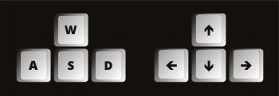
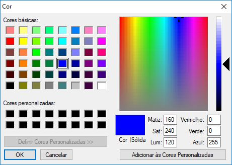

|
||
CONCEITOS BÁSICOS
O
Você pode desenhar com
 Os Cursores
O Cursor: As ferramentas de Formas utilizam um ou dois cursores:
Os Modos
O
A Tela de DesenhoA Tela de Desenho é um espaço fixo de 950 x 500 pixels onde o usuário pode desenhar, inserir imagens e textos, ela é composta de 2 camadas
CONTROLES BÁSICOS
O
Tabela de Cores
Clicando no Círculo da Cor Selecionada abrirá uma janela onde você poderá escolher entre as cores pré-selecionadas ou
usar o misturador para ter acesso a milhões de cores.
 Fonte
O Controle Tamanho da Fonte afeta as Ferramentas de Texto: Colar Texto e Tabela de Emojis. Lados/Pontas
O Controle Lados afeta todas as Ferramentas Polígono e Estrela. Largura do Traço
O Controle Largura do Traço afeta todas as Ferramentas de Formas.
O número que aparece abaixo do título é a largura definida. Raio
O Controle Raio afeta as ferramentas Forma Círculos, Polígonos e Estrelas, define o raio do objeto. Transparência de Objetos
O Controle Transparência afeta todas as ferramentas de Forma e de Fundo que aceitem o controle Formas Sólidas. Velocidade do Cursor
O Controle Velocidade define o salto do cursor em pixels quando a movimentação é feita com o teclado. |
FERRAMENTAS
As Ferramentas podem ser identificados pelo título em cor FORMAS
|
As formas incluem Retas, Retângulos, Círculos, Polígonos e Estrelas.
TEXTO
A ferramenta Texto permite inserir textos de até 150 caracteres na imagem com o tamanho entre 10 e 100 pontos.
Permite também inserir Emojis diretamente na Tela.
IMAGEM (abrir e salvar)
A ferramenta Imagem permite inserir uma imagem de até 1Mb (Megabyte) na Tela de Desenho.
FERRAMENTAS DE FUNDO
As Ferramentas de Fundo podem ser identificados pelo título em cor FUNDO
A ferramenta Fundo permite alterar o fundo da Tela de Desenho independentemente.
Utilize uma imagem, uma cor ou desenhos aleatórios de círculos e retângulos coloridos.
É possível combinar todas e ainda combinar com o controle Transparência.
A ferramenta Fundo permite utilizar uma imagem com transparência.
COMANDOS
Os Comandos podem ser identificados pelo título em cor MODO IMEDIATO / MODO PREVISÃO
O Modo
O Modo
GRAVAÇÃO
A ferramenta Gravação grava os passos do desenho permitindo que o usuário apague passos a qualquer momento.
Todos os passos são gravados, desde o posicionamento do cursor na tela até as mudanças de fundo,
uma maneira prática de dizer isso é: todos os passos das ferramentas à esquerda da ferramenta Gravação são gravados.
SALVAR, APAGAR E REINICIAR
A ferramenta Apagar permite apagar a tela e a ferramenta Reset reinicia todo o programa.
|